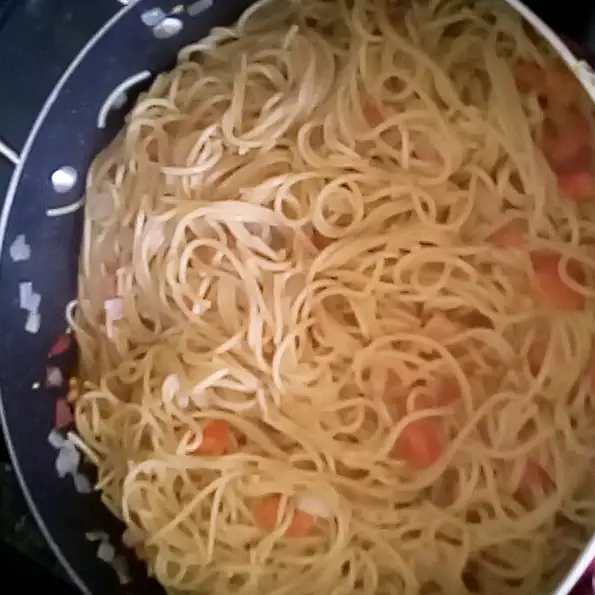

Pasta

Light pasta side with tomatoes and garlic. Can use the chicken breast recipe to go along with it. Perfect side for a snack or for some dinner. Can also make this for work to eat as a snack. Thank you "DEBNJAMES" for the recipe.
16 ounce package angel hair pasta
4 cloves of minced garlic
2 cups of plum tomatoes, diced
10.75 ounce can low sodium chicken broth
Freshly ground black pepper
2 tablespoons chopped fresh basil
1/4 cup of grated parmesan cheese
Step 1: Use a large pot of salted light water to boil. Add pasta and cook for about 8 minutes to drain.
Step 2: Pour olive oil in a large deep skillet over high heat. Saute onion and garlic until it's lightly browned. Reduce heat unitl it's medium and add tomato, vinegar, and chicken broth. Simmer this for 8 minutues
Step 3: Stir red pepper, black pepper, and cooked pasta, toss them thoroughly with sauce. Simmer for five minutes and add grated cheese. Then serve and enjoy